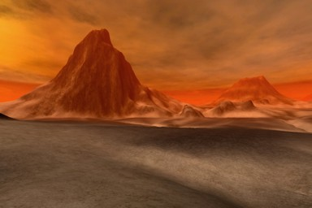

UDN
Search public documentation:
TerrainsFromDEMsJP
English Translation
中国翻译
한국어
Interested in the Unreal Engine?
Visit the Unreal Technology site.
Looking for jobs and company info?
Check out the Epic games site.
Questions about support via UDN?
Contact the UDN Staff
中国翻译
한국어
Interested in the Unreal Engine?
Visit the Unreal Technology site.
Looking for jobs and company info?
Check out the Epic games site.
Questions about support via UDN?
Contact the UDN Staff
DEM からのテレイン: Digital Elevation Models (数値標高モデル) の使用
ドキュメントの概要: テレイン作成における DEM ファイルの使用に関する情報。 初稿は David Green? 。Digital Elevation Model の概要
Digital Elevation Model ("DEM"、数値標高モデル) は、標高を示す標本点のラスタライズ グリッドを含むデータ ファイルのことで、これらのデータは通常、周円軌道レーダー衛星などのリモートセンシング システムから得られます。このデータは、調査地点のグレースケールのハイトマップ (高さマップ) か、3D メッシュ表現に変換されます。DEM データが現在提供する解像度や品質にはかなりの幅がありますが、過半数のデータは解像度が非常に低く、そのため GIS または高高度の画像や陰影起伏図のレンダリングにしか利用できません。 GoogleEarth (http://earth.google.com/) や Mars HiRISE プロジェクト (http://hirise.lpl.arizona.edu/) で観測できるような実際のラスター写真画像と、DEM データを混同しないでください。ラスター写真には写真用カメラで撮影された標準視像が含まれるのに対し、DEM データはレーダー、レーザーまたは同様の高度計測システムを使用して累算されるのが通常です。 写真データでは、画像のピクセルデータが各位置の高度を直接表現していないため、これをハイトマップの高度データに変換するのは容易ではありません。主光源の光線の入射角や、それにより生じる光と影の影響など、多数の要因を考慮しなければならないため、写真から派生高度データを抽出することは難しいのです。 等高線図 (Contour Line Map) 形式の地形データを利用することもできます。これには、単色スタイルと標高カラーのグラデーションスタイルがあります。カラー起伏図 (Color Relief) 形式は等高線図に似ていますが、高度をカラーグラデーションのみで表現します。等高線図、カラー起伏図の多くは土地測量データに基づいて作成されるため、リモートセンシング データファイルが持つ解像度や精度を伴いません。 空中写真画像: Volga River Delta (ボルガ川の三角洲) - アメリカ地質調査所 (USGS)
等高線図:
Volga River Delta (ボルガ川の三角洲) - アメリカ地質調査所 (USGS)
等高線図:
 アメリカ、ニューハンプシャー州- アメリカ地質調査所
陰影起伏画像:
アメリカ、ニューハンプシャー州- アメリカ地質調査所
陰影起伏画像:
 アメリカ、ニューメキシコ州- National Atlas Map Maker
DEM データから作成された Unreal テレイン
アメリカ、ニューメキシコ州- National Atlas Map Maker
DEM データから作成された Unreal テレイン

David GreenDEM データの解像度
ほとんどの DEM データファイルは、x*y 個の標本点 (16 ビット バイナリまたは ASCII の高度値) を含む四角形のラスター画像として保存されます。多様な DEM 形式を UnrealEd G16 のハイトマップ形式に直接変換することができるソフトウェア ユーティリティが多数あります (G16Ed、HMCS および HMES ソフトウェア アプリケーションなど)。他の GIS および政府/大学提供の変換ユーティリティは RAW16 または TIF-16 などの中間変換ファイル形式を提供しています。これらの形式から UnrealEd の G16 形式により簡単に変換することができます。 現在最もよく使用されている DEM ファイルは地球と火星に関するもので、各惑星のさまざまな位置の多彩な解像度データを取得できます。 DEM ファイルの解像度は arcminutes (分角度) と arcseconds (秒角度) 単位で計測されたものか、またはそれぞれの空間距離をメートル単位で計測されたものです。最も一般的な解像度は 10、30 および 90 メートルです。現在利用できる最高の解像度データは1 ～ 5 メートルですが、このような高解像度データは稀で、通常は公開されていません。arcsecond またはメートル単位の解像度は、データファイル内の各標本点の間の空間を指します。 地球の海抜では、1 arcminute (_1 分 (角度) _) は約 1.151 マイル (6076.115 フィート) または 1.852 キロメートル (1852 メートル) で、1 海里 (nautical mile) に当たります。 1 arcsecond の 3 分の 1 (1/3") は通称 10 meter (10.3 メートルまたは 33.79 フィート) と呼ばれています。 1 arcsecond (1" または 1/60 arcminute) は通称 30 meter (30.86 メートルまたは 101.2 フィート) と呼ばれます。 3 arcseconds (3") は通称 90 meter (92.6 メートルまたは 303.6 フィート) と呼ばれます。 30 arcseconds (30") は約 1km (926 メートルまたは 3038.06 フィート) です。等高線図と起伏図の解像度
等高線図を使用してハイトマップ情報を取得する場合の問題点は、基本的にそれらの画像が、特定地域の妥当な高度変化を線群として全般的に定義されたものであるという点です。このデータをスキャンし、地図の特定グリッド領域の実際の x*y の高度点に変換するのは困難です。個々の等高線のエッジ検出およびトレースを実行し、次にそこから高度基準およびカーブを補外するための専用ソフトウェアが必要です。等高線図のテレイン ディテールの実際の解像度は非常に低いものです。 起伏図および陰影起伏図を使用してハイトマップ情報を取得する場合の問題点は、起伏図は通常は等高線 (地形) 図を基にして、地質学的特徴をより分かりやすく示すために高度寸法を 10 倍に拡大して作成されているという点です。陰影起伏図には光と影のレンダリングデータも含まれ、よりすぐれた 3D 図を提供してくれますが、これは元の高度データから簡単に切り離すことができません。 等高線図および起伏図はいずれも 1:x の縮尺で計測されています。一般的なスケールの値とそれらの等価サイズを次に示します。 1:24,000 (2万4千分の1) の縮尺地図は 7.5-minute (7分30秒地図)。7.5-minute (7分30秒) の四辺形は約 64 平方マイルの面積を内包する。 1:62,500 (6万2500の1) の縮尺地図は 15-minute (15分地図)。1:63,360 は 1 マイルを 1 インチで表わす。 1:100,000 の縮尺地図は、30 分間隔の緯度線、60 分間隔の経度線で区切られている。30 x 60-minute の四辺形では、地図の 1 センチメートルは地上距離の 1 キロメートルを表す。DEM 解像度の拡大
例えば、30 メートルまたは 10 メートルのデータファイルにノイズを追加するなど、低解像度の DEM ファイルにディテールを加えることは可能ですが、データファイルの存在しない元の高度データ自体を再現することは不可能です。DEM データファイルをハイトマップのソースとして使用し、その高度データ上に他のノイズや地形学要因 (浸食など) を通過させて変更した場合、その DEM では元の高度点が変更されることから、ソースが表現されていないことになります。Unreal Units による DEM データ
「ビデオゲームのテレインとして使用するのに適した DEM データの解像度は?」という質問には、5 メートル以下であると簡単に答えることができます。10 メートル以上の DEM データは、テレインのデザインに使用するには解像度が低すぎます。 Unreal Engines 2、2.5 および 3 では、デフォルトの縮尺として 1 Unreal Unit = 2 cm を使用しています。 つまり、1 メートル = 50 Unreal Units です。 このデフォルトのスケールを使用した場合、一般的な DEM 解像度データは以下の Unreal Unit 間隔に相当します。- 1 メートル DEM データ = 1x50 = 標本点の間隔が 50 UUs
- 5 メートル DEM データ = 5x50 = 標本点の間隔が 250 UUs
- 10 メートル DEM データ = 10x50 = 標本点の間隔が 500 UUs
- 30 メートル DEM データ = 30x50 = 標本点の間隔が 1500 UUs
- 90 メートル DEM データ = 90x50 = 標本点の間隔が 4500 UUs
DEM ファイルの形式
最も一般的な DEM (デジタル標高モデル) ファイル形式の拡張子を以下に示します。| 拡張子 | ファイル形式 |
|---|---|
| .ddf | USGS DEM |
| .dem | Vista Pro Binary DEM |
| .dem | USGS DEM |
| .hgt | SRTM (Shuttle Radar Topography Mission) |
| .tif | GeoTIFF |
| .txt | Vista Pro ASCII DEM |
DEM 変換ソフトウェア
DEM ファイルを他のファイル形式に変換するソフトウェア アプリケーションやユーティリティが多数存在します。これらの中間形式から、最終的にハイトマップ ソフトウェアや UnrealEd で使用可能な形式に変換することができます。広範にわたる DEM データタイプと、多彩な特徴や機能を備えたツールが存在するため、ここでは特定のアプリケーションを推奨していません。ソフトウェアの選択は、スタジオの要件により異なります。1 つ以上の DEM 形式の変換をサポートする一般的なアプリケーションには、HMCS、HMES および Leveller などが含まれます。さらに、多彩な DEM 形式の読み取りおよび変換用に、非営利団体、政府機関、教育機関向けのツールが多数存在します。これには、3DEM、Kashmir3D、LandSerf、MicroDEM、Wilbur および EarthSlot、LandView、World Wind、などが含まれます。DEM データソース
[[http://www.usgs.gov][アメリカ地質調査所] の Web サイトには、航空写真、衛星画像、リモートセンシングデータを現在提供している団体のほとんどのリンクが掲載されています。このデータの大半は、有料でコピーを入手できます。以下は、利用可能な DEM データソースのごく一部のリストです。 5 メートル UTAH AGRCアメリカのデータ領域のみ。
http://agrc.utah.gov/agrc_sgid/dem_5m.html 10 メートル NED
10 メートル、30 メートルのデータセット。10 メートルはアメリカ領域のみ。
http://ned.usgs.gov/ 30 メートル USGS
http://www.usgs.gov/pubprod/ 90 メートル SRTM: Shuttle Radar Topography Mission (スペースシャトル立体地形データ)
http://srtm.usgs.gov/
90 メートル データは元の 30 メートル データから平均化。
元の 30 メートル データセットは干渉を使用して取得。
30m x 30m 空間を、垂直高さの絶対精度 <= 16m、相対精度 <= 10m、水平円の絶対精度<= 20m でサンプリング。 Canada Topographical Data (カナダ地形データ)
http://maps.nrcan.gc.ca/index_e.php 1 キロメートル SRTM30: Shuttle Radar Topography Mission、30 arcsecond (1km) セット
http://topex.ucsd.edu/WWW_html/srtm30_plus.html
926 メートルのデータ。 GTOPO30: 30 arcsecond の地形データセット。
http://edc.usgs.gov/products/elevation/gtopo30/gtopo30.html
926 メートルのデータ。